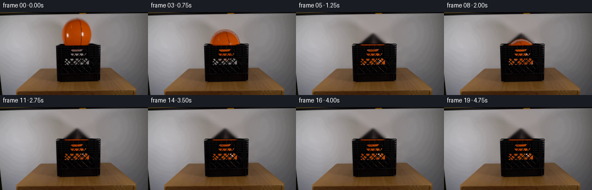
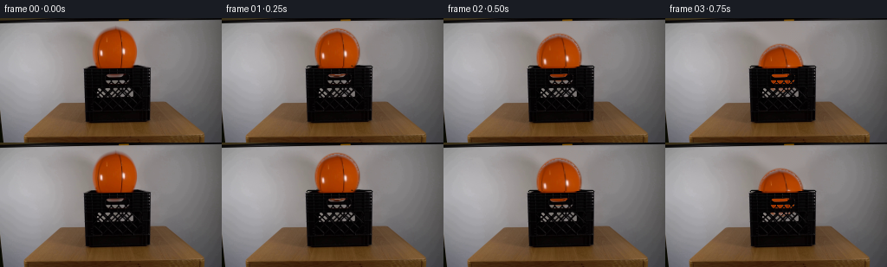
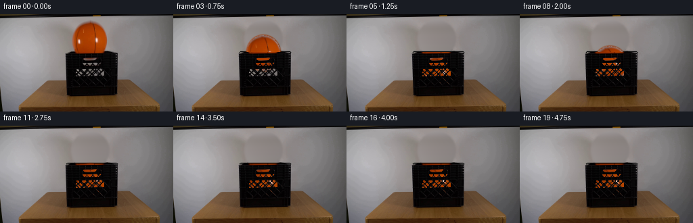
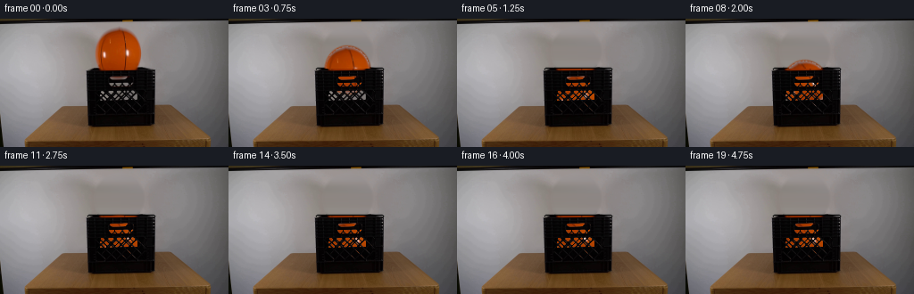
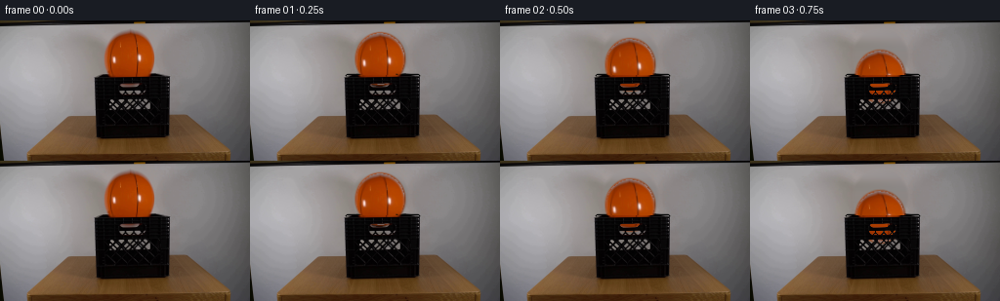
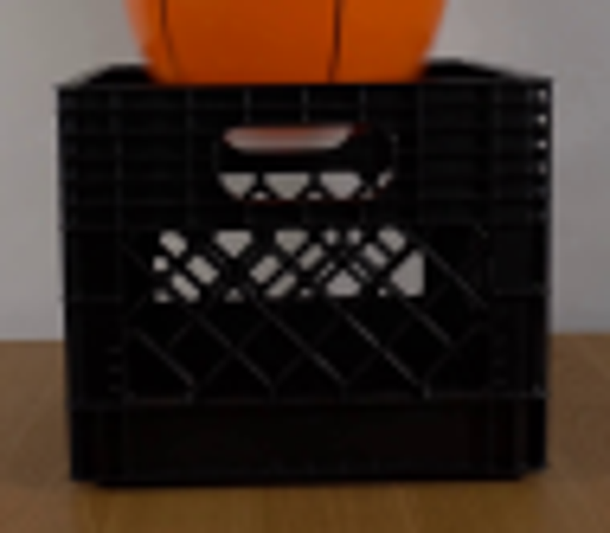

CODING AGENTS AS PIXEL WORLD MODELS
traex/GPT-5.6-Sol · 0014
点击播放 · 原生 RGB 像素
逐轮保存的候选
回放视频、检查图与代码变化。
每份候选均可单独播放。实际图片检查记录在下方工具轨迹中。
候选 01播放与检查图
点击播放 · 原生 RGB 像素


展开代码变化
--- 上一保存版本 +++ 本次保存版本 @@ -0,0 +1,178 @@ +"""Generate the requested locked-camera basketball drop. + +The shot is made from the supplied first frame. A clean plate is recovered +locally, while the ball is completed into a round textured sprite and moved +with a short, damped gravitational bounce inside the crate. The dark crate +lattice is composited back in front of the ball so the latter is visible only +through the real openings. +""" + +from pathlib import Path + +import cv2 +import numpy as np + +import artifact_io + + +ROOT = Path(__file__).resolve().parent + + +def soft_ellipse_alpha(h, w, cx, cy, rx, ry): + """One-pixel antialiased ellipse coverage.""" + yy, xx = np.mgrid[:h, :w].astype(np.float32) + q = np.sqrt(((xx - cx) / rx) ** 2 + ((yy - cy) / ry) ** 2) + # About 1.3 pixels of antialiasing around the perimeter. + edge = 1.25 / min(rx, ry) + return np.clip((1.0 + edge - q) / (2.0 * edge), 0.0, 1.0) + + +def make_ball(source): + """Complete the partially hidden photographed ball into an RGBA sprite.""" + h = w = 62 + cx, cy, rx, ry = 30.0, 29.0, 25.6, 27.1 + origin_x, origin_y = 103, 7 + rgb = np.empty((h, w, 3), np.float32) + yy, xx = np.mgrid[:h, :w] + + # A smooth orange fallback matching the photographed illumination. + nx = (xx - cx) / rx + ny = (yy - cy) / ry + radial = np.clip(np.sqrt(nx * nx + ny * ny), 0, 1) + light = 1.04 - 0.28 * radial - 0.10 * nx + 0.03 * (-ny) + rgb[..., 0] = 198 * light + rgb[..., 1] = 67 * light + rgb[..., 2] = 5 * light + + # Copy the actual visible surface. For the hidden lower cap, reflect the + # lower-middle texture so grain, seams and lighting remain photographic. + for y in range(h): + gy = origin_y + y + sample_y = gy if gy <= 55 else int(round(72 - gy)) + sample_y = max(10, min(55, sample_y)) + for x in range(w): + gx = origin_x + x + if 0 <= gx < source.shape[1] and 0 <= sample_y < source.shape[0]: + # Stay away from the original wall at the antialiased edge. + q = ((x - cx) / rx) ** 2 + ((y - cy) / ry) ** 2 + if q < 0.94: + rgb[y, x] = source[sample_y, gx] + + # The reflected photograph naturally continues the vertical channels. + # Reinforce only their lower portions, where the source was behind the rim. + for y in range(45, 57): + # central basketball channel, gently curved + x0 = int(round(37.0 + 0.035 * (y - 29) ** 2)) + if x0 < w - 2: + rgb[y, x0 : x0 + 2] *= np.array([0.30, 0.34, 0.38]) + + alpha = soft_ellipse_alpha(h, w, cx, cy, rx, ry) + return np.clip(rgb, 0, 255).astype(np.uint8), alpha.astype(np.float32) + + +def clean_plate(source): + """Remove the initial ball without altering the camera/background.""" + mask = np.zeros(source.shape[:2], np.uint8) + # Whole visible ball silhouette, including its dark channels. + cv2.ellipse(mask, (133, 36), (28, 28), 0, 0, 360, 255, -1) + # Include the little orange cap visible in the crate's handle opening. + r, g, b = cv2.split(source) + orange = ((r > 85) & (r > g * 1.45) & (r > b * 1.65)).astype(np.uint8) * 255 + orange[:7] = 0 + orange[72:] = 0 + orange[:, :101] = 0 + orange[:, 166:] = 0 + mask = cv2.bitwise_or(mask, cv2.dilate(orange, np.ones((3, 3), np.uint8))) + plate = cv2.inpaint(source, mask, 4, cv2.INPAINT_TELEA) + + # Make the newly exposed rear/top edge of the crate coherent. This narrow + # edge is behind the ball in frame zero and is covered again during most of + # the drop. + cv2.line(plate, (99, 56), (172, 56), (7, 8, 8), 2, cv2.LINE_AA) + cv2.line(plate, (102, 59), (170, 59), (17, 18, 18), 1, cv2.LINE_AA) + return plate + + +def transformed_ball(ball_rgb, ball_alpha, center, angle, squash=1.0): + """Return a full-frame transformed sprite and alpha mask.""" + h, w = ball_alpha.shape + # Rotation about the texture centre, followed by tiny impact squash. + m = cv2.getRotationMatrix2D((30.0, 29.0), angle, 1.0) + rot_rgb = cv2.warpAffine(ball_rgb, m, (w, h), flags=cv2.INTER_LINEAR, + borderMode=cv2.BORDER_CONSTANT, borderValue=0) + rot_a = cv2.warpAffine(ball_alpha, m, (w, h), flags=cv2.INTER_LINEAR, + borderMode=cv2.BORDER_CONSTANT, borderValue=0) + + new_h = max(1, int(round(h * squash))) + new_w = max(1, int(round(w / np.sqrt(squash)))) + rot_rgb = cv2.resize(rot_rgb, (new_w, new_h), interpolation=cv2.INTER_LINEAR) + rot_a = cv2.resize(rot_a, (new_w, new_h), interpolation=cv2.INTER_LINEAR) + + frame_rgb = np.zeros((144, 256, 3), np.uint8) + frame_a = np.zeros((144, 256), np.float32) + x0 = int(round(center[0] - new_w * (30.0 / w))) + y0 = int(round(center[1] - new_h * (29.0 / h))) + x1, y1 = x0 + new_w, y0 + new_h + sx0, sy0 = max(0, -x0), max(0, -y0) + sx1, sy1 = new_w - max(0, x1 - 256), new_h - max(0, y1 - 144) + dx0, dy0 = max(0, x0), max(0, y0) + dx1, dy1 = dx0 + (sx1 - sx0), dy0 + (sy1 - sy0) + frame_rgb[dy0:dy1, dx0:dx1] = rot_rgb[sy0:sy1, sx0:sx1] + frame_a[dy0:dy1, dx0:dx1] = rot_a[sy0:sy1, sx0:sx1] + return frame_rgb, frame_a + + +def composite(base, top, alpha): + a = alpha[..., None].astype(np.float32) + return np.clip(base.astype(np.float32) * (1 - a) + top.astype(np.float32) * a, + 0, 255).astype(np.uint8) + + +def generate(): + source = cv2.cvtColor(cv2.imread(str(ROOT / "first_frame.png")), cv2.COLOR_BGR2RGB) + plate = clean_plate(source) + ball_rgb, ball_alpha = make_ball(source) + + # The real plastic pixels act as the foreground occluder. Lattice holes + # are left transparent, giving convincing changing glimpses of the ball. + gray = cv2.cvtColor(source, cv2.COLOR_RGB2GRAY).astype(np.float32) + crate_alpha = np.zeros((144, 256), np.float32) + roi = np.clip((69.0 - gray) / 48.0, 0.0, 1.0) + crate_alpha[56:122, 97:174] = roi[56:122, 97:174] + # Erase dark channels belonging to the old ball, not the crate. + yy, xx = np.mgrid[:144, :256] + old_ball = (((xx - 133) / 27.0) ** 2 + ((yy - 36) / 28.0) ** 2 < 1) + crate_alpha[old_ball & (yy < 55)] = 0 + # Solid top/front lip and outer crate rails. + crate_alpha[56:59, 99:173] = np.maximum(crate_alpha[56:59, 99:173], 0.92) + + # Four frames of free fall, followed by successively smaller bounces. + centers_y = [36.0, 38.5, 45.0, 57.0, 73.0, 86.5, + 76.0, 70.0, 73.0, 81.0, 86.0, + 82.0, 80.5, 83.0, 86.0, 84.0, + 83.7, 85.2, 85.8, 85.8] + centers_x = [133.0, 133.0, 133.1, 133.3, 133.5, 133.7, + 133.8, 133.9, 134.0, 134.1, 134.1, + 134.1, 134.0, 134.0, 134.0, 134.0, + 134.0, 134.0, 134.0, 134.0] + angles = [0, 1, 3, 6, 10, 14, 16, 18, 20, 22, + 24, 25, 26, 27, 28, 28.5, 29, 29.5, 30, 30] + + frames = [source.copy()] # contract: frame 00 is pixel-identical + for i in range(1, 20): + squash = 0.93 if i == 5 else (0.97 if i in (10, 14) else 1.0) + sprite, a = transformed_ball(ball_rgb, ball_alpha, + (centers_x[i], centers_y[i]), angles[i], squash) + frame = composite(plate, sprite, a) + + # Restore the photographed foreground lattice and its small highlights. + frame = composite(frame, source, crate_alpha) + frames.append(frame) + + frames = np.stack(frames).astype(np.uint8) + assert np.array_equal(frames[0], source) + return frames + + +if __name__ == "__main__": + artifact_io.save(generate(), ROOT)
候选 02播放与检查图
点击播放 · 原生 RGB 像素

展开代码变化
--- 上一保存版本
+++ 本次保存版本
@@ -84,6 +84,22 @@
orange[:, 166:] = 0
mask = cv2.bitwise_or(mask, cv2.dilate(orange, np.ones((3, 3), np.uint8)))
plate = cv2.inpaint(source, mask, 4, cv2.INPAINT_TELEA)
+
+ # Inpainting near the crate can pull black rail pixels upward. Build an
+ # explicit continuation of the softly lit wall from unobstructed samples
+ # on both sides, and use it only in the original ball silhouette. A
+ # quadratic captures the broad studio-light falloff without a flat patch.
+ wall = source.astype(np.float32).copy()
+ fit_x = np.r_[np.arange(45, 94), np.arange(177, 222)]
+ target_x = np.arange(source.shape[1])
+ for y in range(7, 80):
+ for c in range(3):
+ coef = np.polyfit(fit_x, source[y, fit_x, c], 2)
+ wall[y, :, c] = np.polyval(coef, target_x)
+ wall = cv2.GaussianBlur(np.clip(wall, 0, 255).astype(np.uint8), (0, 0), 1.1)
+ replacement = cv2.GaussianBlur(mask, (7, 7), 1.5).astype(np.float32) / 255.0
+ replacement[80:] = 0
+ plate = composite(plate, wall, replacement)
# Make the newly exposed rear/top edge of the crate coherent. This narrow
# edge is behind the ball in frame zero and is covered again during most of
候选 03播放与检查图
点击播放 · 原生 RGB 像素


展开代码变化
--- 上一保存版本
+++ 本次保存版本
@@ -87,15 +87,14 @@
# Inpainting near the crate can pull black rail pixels upward. Build an
# explicit continuation of the softly lit wall from unobstructed samples
- # on both sides, and use it only in the original ball silhouette. A
- # quadratic captures the broad studio-light falloff without a flat patch.
+ # immediately on both sides, and use it only in the old silhouette.
wall = source.astype(np.float32).copy()
- fit_x = np.r_[np.arange(45, 94), np.arange(177, 222)]
- target_x = np.arange(source.shape[1])
for y in range(7, 80):
- for c in range(3):
- coef = np.polyfit(fit_x, source[y, fit_x, c], 2)
- wall[y, :, c] = np.polyval(coef, target_x)
+ left = source[y, 100].astype(np.float32)
+ right = source[y, 168].astype(np.float32)
+ for x in range(99, 170):
+ u = np.clip((x - 100) / 68.0, 0, 1)
+ wall[y, x] = left * (1 - u) + right * u
wall = cv2.GaussianBlur(np.clip(wall, 0, 255).astype(np.uint8), (0, 0), 1.1)
replacement = cv2.GaussianBlur(mask, (7, 7), 1.5).astype(np.float32) / 255.0
replacement[80:] = 0
可观测工具轨迹
实际执行的命令与返回图片。
命令 1exit 0
/bin/bash -lc "cat prompt.txt && printf '\\n---RULES---\\n' && cat GENERATION_RULES.md"
命令 2exit 0
/bin/bash -lc "find . -maxdepth 2 -type f -printf '%p %s bytes\\n' | sort"
命令 3exit 0
/bin/bash -lc "python3 - <<'PY'
from PIL import Image
im=Image.open('first_frame.png')
print(im.size,im.mode)
PY
command -v ffmpeg || true
command -v convert || true
python3 - <<'PY'
mods=['cv2','numpy','PIL','imageio','torch']
for m in mods:
try:
x=__import__(m); print(m,'OK',getattr(x,'__version__',''))
except Exception as e: print(m,'NO',e)
PY"命令 4exit 0
/bin/bash -lc "python3 - <<'PY'
from PIL import Image
im=Image.open('first_frame.png')
im.crop((88,45,183,128)).resize((760,664)).save('.tmp/crop.png')
PY"命令 5exit 0
/bin/bash -lc "sed -n '1,240p' artifact_io.py"
命令 6exit 0
/bin/bash -lc "python3 generate.py && python3 - <<'PY'
import numpy as np
from PIL import Image
im=np.asarray(Image.open('first_frame.png'))
f=np.asarray(Image.open('frames/00.png'))
print('exact',np.array_equal(im,f), 'shape',f.shape)
PY"命令 7exit 0
/bin/bash -lc 'python3 generate.py'
命令 8exit 0
/bin/bash -lc "python3 - <<'PY'
from PIL import Image
import numpy as np
s=np.array(Image.open('first_frame.png'))
f=np.array(Image.open('frames/19.png'))
for y in [10,20,30,40,50]:
print('y',y,'src90,100,166,176',s[y,[90,100,166,176],0], 'out center',f[y,133,0], 'sides out',f[y,[95,175],0])
PY"命令 9exit 0
/bin/bash -lc "python3 generate.py && ls -lh pixels.npz index.html inspection.png frames/00.png frames/19.png && python3 - <<'PY'
from PIL import Image
import numpy as np
s=np.array(Image.open('first_frame.png')); f=np.array(Image.open('frames/00.png'))
assert np.array_equal(s,f)
z=np.load('pixels.npz')['pixels']
assert z.shape==(144,256,20)
print('validation ok',z.shape,z.dtype, len(list(__import__('pathlib').Path('frames').glob('*.png'))))
PY"视觉工具实际返回图片 1

视觉工具实际返回图片 2

视觉工具实际返回图片 3

视觉工具实际返回图片 4

保存候选 3 份；完成命令 9 次；可验证图片返回 4 张。原始 API 响应与完整日志保留在本地。